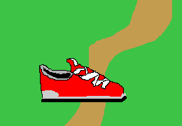
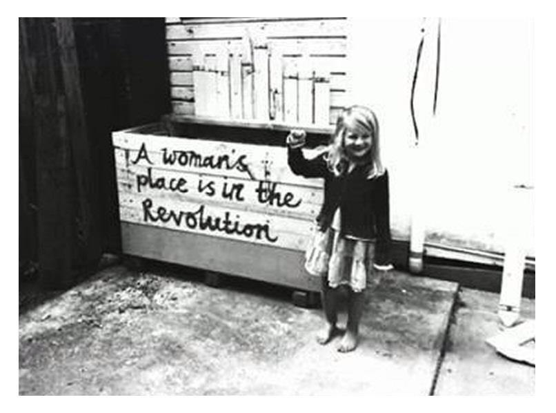

by Marylou Lenhart

defining Confidence[1]:
The state of feeling certain about the truth of something.
CONFIDENCE is TRUTH
Failure
==
BAD
:C
Imposter Syndrome [2]
"Fear is the path to the dark side."

FAILURE => KNOWLEDGE => SUCCESS
Failure != Bad
:D
See failure as a learning tool. We’re deathly afraid of failing, because we see this as a statement that we suck. But it’s not. [...] Failure is a necessary step in learning — if you can already do something perfectly, you’re not learning anything. You have to fail, re-iterate the process in a new way, and then succeed. [...] Failure is an opportunity.
~zenhabits.net[4]
Why do we fall down, sir?
So we can learn to pick ourselves back up.
Assume nobody else has any idea what they're doing either. A lot of people refuse to try something because they feel they don't know enough about it or they assume other people must have already tried everything they could have thought of. Well, few people really have any idea how to do things right and even fewer are willing to try new things, so usually if you give your best shot at something you'll do pretty well.
~ the late Aaron Swartz[5]
FACTS:
(YOU LEARN!)
Learn:
Anita Borg's list of Famous Women in Computer Science
Geek Feminism Wiki
Reducing Stereotype Threat
Interact:
Girl Develop It
DevChix
Both:
National Center for Women & Information Technology
Anita Borg Institute for Women and Technology